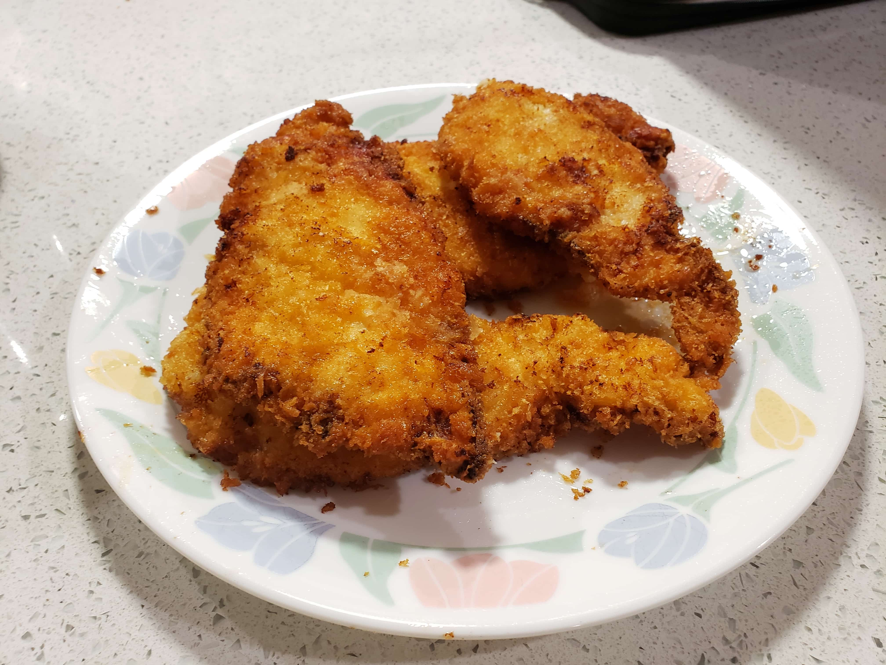

Chicken Katsu

Ingredients:
- 1 lb Chicken cut into slices
- Milk
- 50 grams Cornstarch
- 1 Egg
- Salt
- Pepper
- Panko breadcrumbs
- Oil for frying
Instructions:
- Pound chicken pieces until flat.
- Submerge the chicken in milk and let soak for 30 minutes.
- While the chicken is saoking, mix together the cornstarch and egg to form a batter.
- After soaking for 30 minutes, pat the chicken dry and season with salt and pepper to taste.
- Batter the chicken pieces in the egg and cornstarch mixture.
- Then dip them on both sides in panko breadcrumbs.
- Heat up the oil and fry each piece for 3 minutes on each side over medium heat